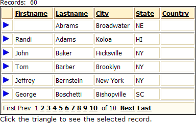
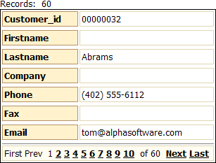

Displaying a Selected Record in a Dialog
A common application requirement is to select a record from a list and then to display the details of that record by itself in a form. This example shows how to build two grid components and two A5W pages that do this.
Creating a Grid with a Hyperlink
The following grid has a hyperlink next to each record. Clicking on the hyperlink selects that record for display in the second grid.
Create a new grid component based on the AlphaSports "customer" table.
Sort the table's records on the "Lastname" and "Firstname" fields.
Display the Grid Fields page.
Move the "Firstname", "Lastname", "Bill_City", "Bill_State_Region", "Bill_Country", and "
" fields from the Available Fields list to the Selected Fields list. Edit the Column Properties > Column heading fields for the "Bill_City", "Bill_State_Region", and "Bill_Country" fields.
Select "
" in the Selected Fields list: Move it to the top of the Selected Fields list.
Change its Display Settings > Control type to "Link".
Erase the column heading in the Column Properties > Column heading field.
Change its Link Properties > Display what in link field to "Static image".
In the Link Properties > Static image field click
 to display the Select Image dialog.
to display the Select Image dialog.Select "RowMarkerOn.png" in the Images list and click OK.
In the Link Properties > Link address type field select "Computed from fields in the grid".
In the Link Properties > Link address field click
to display the <span class=Screen>Link Address Builder</span>. Enter the following code into the Link Address field and click OK.
Selected_Customer_Record.a5w?Selected_Custom_Filter=firstname = "{Firstname}" .and. lastname = "{Lastname}" |
 Note : Remove the space characters from the finished URL.
Note : Remove the space characters from the finished URL.
This URL displays the Selected_Customer_Record.a5w page and sets its record filter ( Selected_Custom_Filter ) equal to firstname="{Firstname}".and.lastname="{Lastname}". There are several important points to understand about this expression.
The argument to the right of "?" starts with "Selected_Custom_Filter", which is the alias of the component. The filter expression must reference the component's alias, which is automatically trimmed to 15 characters.
To the right of "Selected_Custom_Filter=" are the arguments in the filter expression. Because you want to replace the field value with the value in the selected record, you must surround field names with quotes and curly braces "{}".
Since there are two arguments in the filter expression, they are combined with an Xbasic ".and.".
There are no spaces in the expression.
The Application Server substitutes the values of the current record's Firstname and Lastname fields for the {Firstname} and {Lastname} placeholders. See A5W Page Filter and Order Syntax for more information.
On the Grid Properties page change L ayout Options > Rows of data to 6.
In the Freeform Edit Regions > Below grid field click
to display the HTML Editor. Enter "Click the triangle to see the selected record". Click Save.Click File > Save as.., name the grid component "Pick_a_Customer" and click Save. The grid should look something like this (if you are using the Sunset style).

Click Close to return to the Web Projects Control Panel.
Creating the Pick_a_Customer Page
Create a new A5W page.
Click File > Save As, name the page "Pick_a_Customer" and click Save.
Enter "Pick a Customer" on the page. Select the text and change it to "Verdana" and size "5 (18pt)".
Click Insert Component to display the Insert Component dialog. Select "Pick_a_Customer" from the Component list and click OK.
Center all the items on the page, save your results, and close the HTML Editor.
Creating the Selected_Customer_Record Grid Component
Create a new grid component based on the AlphaSports "customer" table.
On the Component Type page select "Columnar" in the Grid layout list.
Select Updateable.
Display the Grid Fields page.
Move the "Customer_ID", "Firstname", "Lastname", "Company", "Phone", "Fax", and "Email" fields from the Available Fields list to the Selected Fields list.
Display the Grid Properties page.
Change the Layout Options > Rows of data field to 1.
Display the Grid Update Settings page.
Select "False" in the Permissions > Allow insert list (de-select the check box).
Save your grid as "Selected_Customer_Record" and preview it. Your grid should look something like this.

Creating the Selected_Customer_Record Page
Create a new A5W page.
Click File > Save As, name the page "Selected_Customer_Record" and click Save.
Enter "Selected Customer Record" on the page. Select the text and change it to "Verdana" and size "5 (18pt)".
Click Insert Component to display the Insert Component dialog. Select "Selected_Customer_Record" from the Component list.
 Note : The alias of the component is truncated to 15 characters, which produces "Selected_Custom". This is the name of the component that must be used in Filter and Order expressions.
Note : The alias of the component is truncated to 15 characters, which produces "Selected_Custom". This is the name of the component that must be used in Filter and Order expressions.
Click OK.
Center all the items on the page, save your results, and close the HTML Editor.
Select the "Selected_Customer_Record.A5W" page, right click, and select Publish (Local Webroot) and open.
Select the "Pick_a_Customer.A5W" page, right click, and select Publish (Local Webroot) and open.
Click the blue triangle to the left of any record and it will be displayed in the Selected_Customer_Record page.
See Also